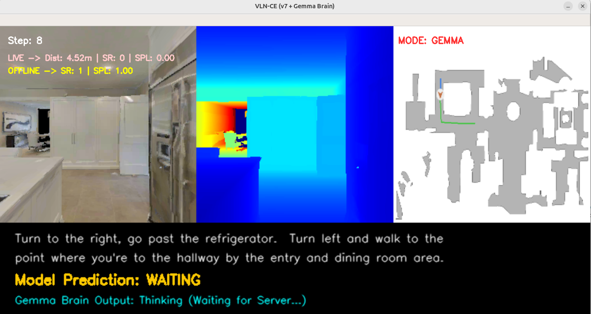

具身导航
具身智能VLN-VLM微调-视觉语言导航-action方案
基于 Qwen3.5-4B 的 NavGPT 复现与优化，在 Habitat MP3D 中完成导航闭环。
SR +20.1% / SPL +12.3%
技术实践
- 基于多模态模型Qwen3.5-4B，复现并优化NavGPT技术；在Habitat的MP3D场景下实现感知-规划-执行的闭环流程。
- 优化模型输入，抑制指令对齐遗忘，增强空间感知能力，结合LLaMA-Factory框架与LoRA技术，实现参数高效微调与部署。
- 对比CMA等传统VLN-CE基线方法，并进行消融实验验证，结果表明，该项目的SR提升20.1％、SPL提升12.3％。
项目图片
